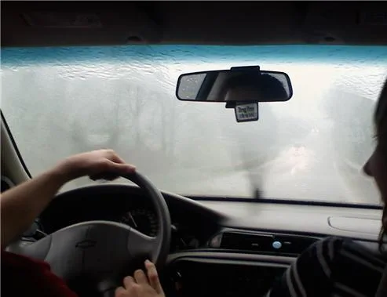
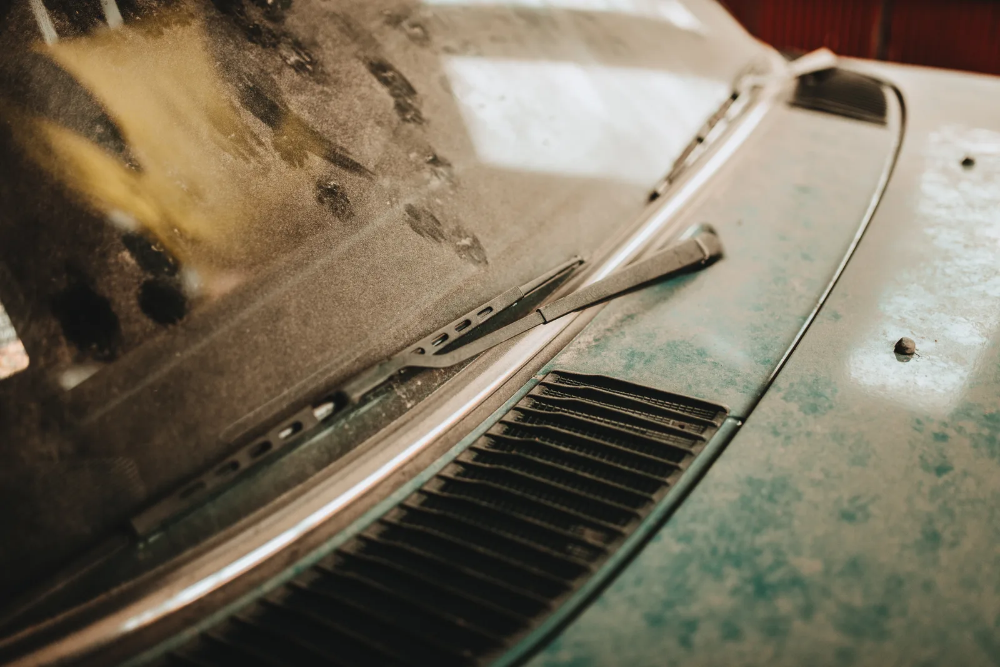
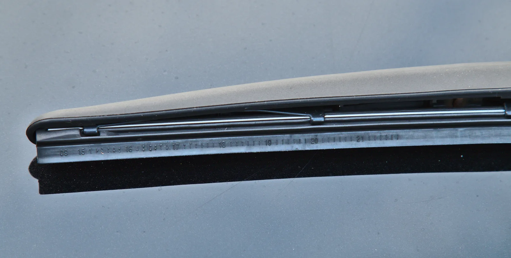

▲ 빗속 주행 시야. 와이퍼 블레이드 상태는 이런 순간에 비로소 체감된다 ⓒ Wikimedia Commons (CC BY 3.0)
와이퍼 블레이드는 자동차 소모품 중에서도 가장 저평가된 부품이다. 평소엔 존재감이 없다가, 갑자기 비가 쏟아지는 순간에야 그 상태를 실감하게 된다. 문제는 그 순간이 이미 늦은 타이밍이라는 점이다.
1. "6개월~1년"이라는 숫자의 함정

▲ 오래 세워둔 차의 먼지 낀 앞유리. 사용 빈도가 낮아도 고무는 시간에 따라 경화된다 ⓒ Wikimedia Commons (CC BY 2.0)
와이퍼 교체 주기로 흔히 인용되는 '6개월~1년'은 평균치일 뿐, 실제 수명은 사용 환경에 크게 좌우된다. 비가 잦은 지역은 와이퍼 작동 빈도 자체가 높아 고무날이 더 빨리 마모되고, 반대로 비를 거의 안 맞는 차라도 자외선과 오존에 고무가 서서히 경화돼 갈라진다. 즉 "안 써서 괜찮다"는 생각은 틀린 경우가 많다.
2. 재질과 형태 — 일반·플랫·하이브리드
와이퍼 블레이드는 뼈대 재질에 따라 일반형, 플랫형, 하이브리드형으로 나뉜다. 일반형은 금속 프레임이 고무를 지지하는 전통적 구조로 저렴하지만 고속 주행 시 뜨는 현상(리프팅)이 생길 수 있다. 플랫형은 프레임 없이 곡률만으로 유리에 밀착해 소음이 적고 미관이 깔끔하다. 하이브리드형은 두 방식을 절충한 형태다. 소재 면에서는 실리콘 코팅이 일반 고무보다 내구성이 좋아 더 오래 쓸 수 있다는 것이 공통된 평가다.
3. 겨울용 와이퍼가 따로 있는 이유

▲ 마모된 와이퍼 블레이드 끝부분. 고무 날이 갈라지거나 뭉개지면 유리에 자국이 남는다 ⓒ Wikimedia Commons (CC BY-SA 4.0)
겨울용 와이퍼는 고무 코팅이 강화돼 있고, 눈과 얼음이 프레임 관절 사이에 끼어 작동을 방해하지 않도록 통짜형 구조로 설계된 경우가 많다. 일반 와이퍼로 겨울을 나면, 서리 제거 시 유리에 붙은 얼음을 억지로 긁어내다 고무날이 손상되는 경우가 흔하다. 이 때문에 전문가들은 겨울용 와이퍼를 별도로 준비하거나, 최소한 겨울철에는 무리한 작동을 피하라고 권한다.
4. 3개월에 한 번, 셀프 점검법
점검 체크리스트
- 비가 오지 않아도 3개월에 한 번 워셔액을 뿌리고 와이퍼를 작동해본다.
- 앞유리에 줄이나 물 자국이 남는지 확인한다.
- 제대로 닦이지 않는 영역이 있는지 살핀다.
- 작동 중 덜컥거리는 소음이나 흔들림이 있는지 듣는다.
- 위 항목 중 하나라도 해당하면 블레이드 교체 시점이다.
이 점검은 특별한 도구 없이 운전석에서 워셔액 버튼만 눌러보면 끝난다. 문제는 대부분의 운전자가 비가 실제로 내리기 전까지는 이 점검을 하지 않는다는 데 있다.
5. 왜 봄·여름에 교체해야 하나

▲ 고속도로 주행 블랙박스 화면. 장마철 집중호우 전 와이퍼 교체를 마쳐두는 것이 안전하다 ⓒ CarPrism
전문가들이 겨울이 아닌 봄이나 여름에 와이퍼를 교체하라고 권하는 이유는 단순하다. 겨울에는 서리나 눈이 쌓인 상태에서 와이퍼를 작동시키는 일이 잦은데, 이 과정에서 새로 교체한 블레이드조차 빠르게 손상될 수 있기 때문이다. 반대로 봄에 교체해두면, 장마철과 여름철 집중호우를 온전한 상태의 블레이드로 대비할 수 있다.
체크포인트
- 교체 주기는 6개월~1년이 기준이지만 강우 빈도에 따라 유동적이다.
- 실리콘 코팅 제품이 일반 고무보다 오래 간다.
- 겨울철엔 서리 제거 시 와이퍼 남용을 피해야 블레이드 수명이 길어진다.
- 교체는 봄이나 초여름, 장마 전에 끝내는 것이 이상적이다.